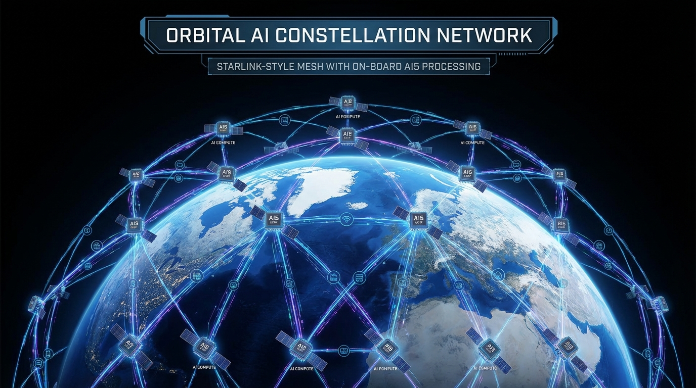

Elon Musk just made his biggest bet yet. Not on electric cars. Not on Mars. Not even on social media. This time, he's betting $25 billion that the future of artificial intelligence isn't on Earth at all—it's in orbit.
TERAFAB is the name, and if you're wondering what it means, you're not alone. It's Muskian branding at its finest: part technical jargon, part science fiction, all ambition. But beneath the buzzword is something genuinely unprecedented—a joint venture between Tesla, SpaceX, and xAI to build the world's most advanced semiconductor manufacturing facility, with a singular focus on producing AI chips destined for space.
The Numbers Are Absurd
Let's talk scale, because TERAFAB operates at a scale that breaks the brain. The facility will produce 1 terawatt of AI compute annually. That's a thousand gigawatts. For context, the total installed electricity generation capacity of the entire United States is roughly 1.2 terawatts. Musk is planning to manufacture computing power equivalent to the entire US power grid—every single year.
But here's the kicker: 80% of that compute is earmarked for orbital deployment. Not data centers in Arizona or Iceland. Satellites. Thousands of them, eventually tens of thousands, forming a constellation of AI-capable orbital platforms that Musk apparently believes will unlock the next paradigm in artificial intelligence.
The AI5 Chip: Already in Production
While the full TERAFAB facility is still under construction somewhere in Texas (of course it's Texas), production has already begun. The AI5 chip—the first fruit of this unholy alliance—is rolling off pilot lines and undergoing qualification testing.
Details are scarce, deliberately so. What we know: AI5 is designed specifically for the harsh radiation environment of low Earth orbit. It features hardened memory arrays, fault-tolerant architecture, and a thermal design that can handle the wild temperature swings of space without the elaborate cooling systems required by terrestrial data centers.
Early benchmarks suggest AI5 delivers performance comparable to NVIDIA's H200 series, but with power efficiency improvements in the 40-60% range. In space, where every watt comes from solar panels and battery storage, efficiency isn't just nice to have—it's existential.
Why Space? The Latency Gambit

Musk has been hinting at this for years. The fundamental constraint on AI development isn't compute anymore—it's latency and data locality. Training large models requires massive datasets that increasingly can't be moved efficiently across terrestrial networks. Inference at scale requires proximity to users.
But there's another angle, one that only becomes obvious when you think like a man who owns a rocket company: orbital AI platforms have strategic advantages that terrestrial data centers simply cannot match. They're immune to physical attack, beyond the reach of most regulatory jurisdictions, and capable of serving the entire planet with uniform latency characteristics.
The Starlink constellation already demonstrates the viability of massive orbital infrastructure. TERAFAB is the logical next step: not just communications, but computation. Intelligence distributed across the sky.
The xAI Connection: Grok Goes Orbital
Let's not ignore the xAI angle here. Musk's AI company has been the quiet third of this joint venture, but its role may be the most consequential. The stated goal is to deploy Grok—or whatever successor model xAI develops—in orbital data centers, creating what Musk calls "sovereign AI infrastructure."
The implications are staggering. An AI system trained and operated entirely in space would be genuinely beyond the reach of any single nation's regulatory authority. It could operate under whatever rules Musk decides to program into it. In an era where governments are scrambling to establish AI governance frameworks, orbital AI represents a form of regulatory arbitrage that lawmakers are simply not prepared to address.
The Manufacturing Marvel
TERAFAB itself is reportedly being built using techniques borrowed from Tesla's automotive manufacturing expertise and SpaceX's rocket production methods. The goal is to achieve semiconductor fabrication speeds that make current facilities look like artisanal workshops.
Musk has brought in talent from TSMC, Samsung, and Intel, but the organizational culture is pure Musk: aggressive timelines, impossible-seeming targets, and a willingness to break established industry norms. Sources suggest TERAFAB will use novel packaging techniques that allow for rapid iteration on chip designs, potentially compressing the traditional 2-3 year development cycle into months.
What This Means for Everyone Else
The competitive implications are profound. If Musk succeeds in deploying meaningful AI compute in orbit, he creates a structural advantage that no terrestrial competitor can match. Not Google. Not Microsoft. Not NVIDIA. The latency, regulatory, and security advantages of orbital AI are genuinely unique.
But there are risks. Space is hard. Radiation-hardened chips are expensive. The economics of orbital AI remain unproven at scale. And there's something slightly unsettling about concentrating that much intelligence infrastructure in the hands of one man—especially this particular man.
TERAFAB represents either the most ambitious infrastructure project in human history or the most expensive vanity project ever conceived. Given Musk's track record, it could easily be both.
One terawatt of orbital compute. The mind reels. The satellites are coming, and they're bringing their own brains.